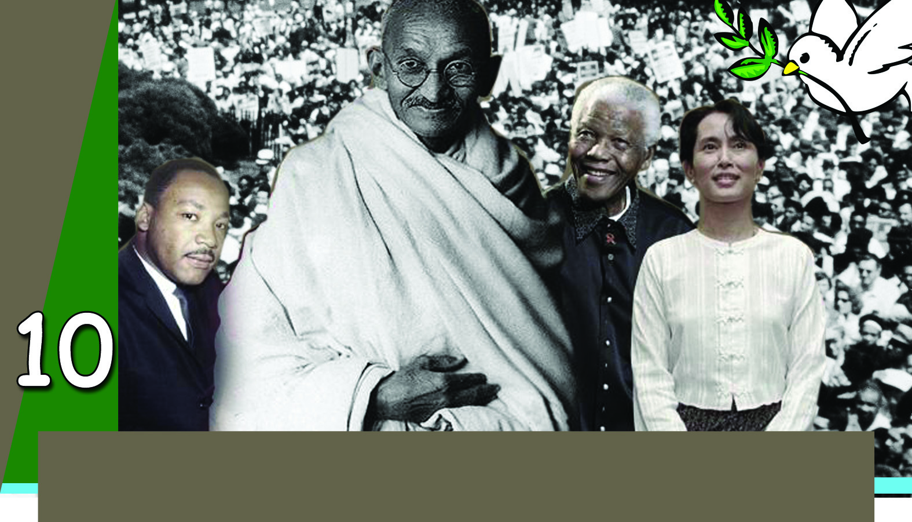
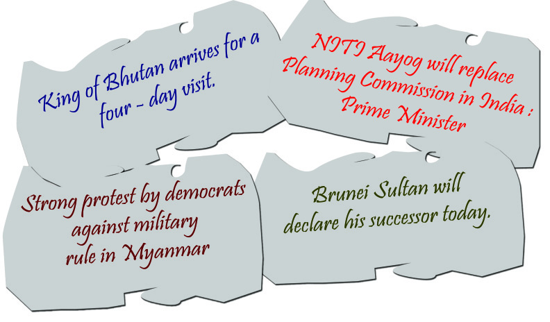
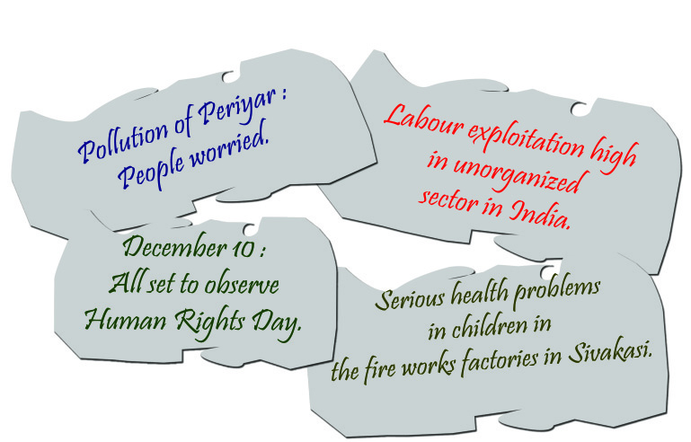
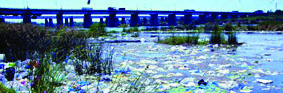
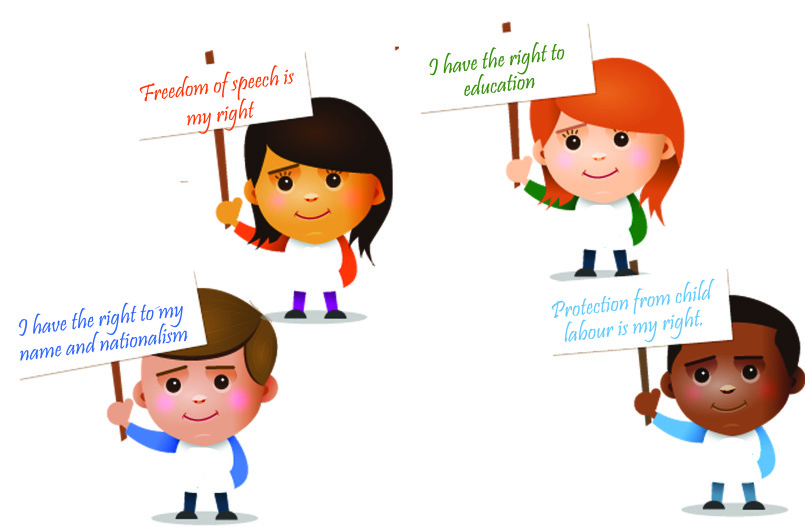
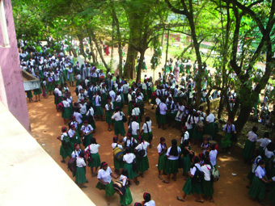
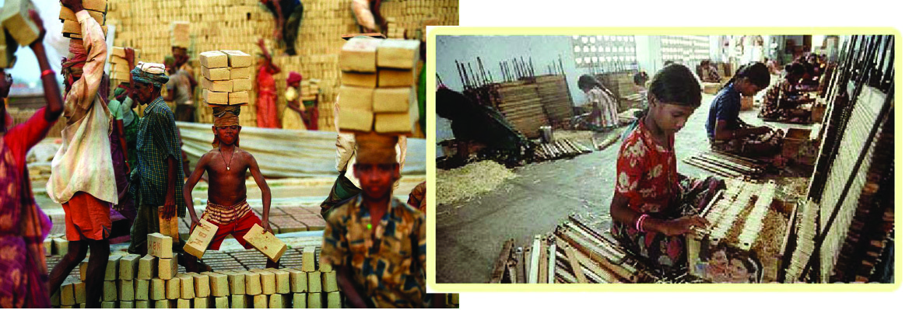
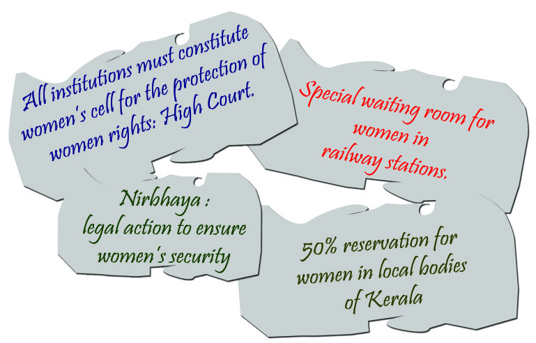
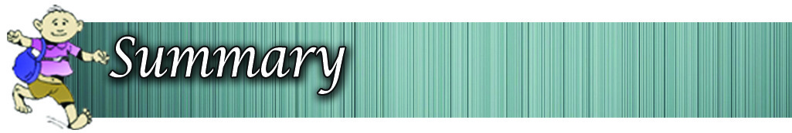

Democracy and Rights
These are the words of Nelson Mandela who fought against the
antidemocratic government in South Africa. What kind of a state was he
fighting for? He dreamt of a democratic system, where everyone is
Page 47

Page 48




Social Science
144
Democracy and Rights
Nelson Mandela was
born on 18 July 1918
in Transkei in South
Africa. He belonged
to the Kasosa tribe. He fought for
the rights of the Blacks, who
constitute 80% of the population
in South Africa. He was the leader
of the African National Congress.
He was accused of treason and
was kept imprisoned for twentysix
years seven months and ten days.
Released on 11 February 1990,
he became the president of South
Africa on 10 May 1994. He died
on 5 December 2013 at the age
of 95.
Nelson Mandela
considered equal. In earlier classes you have learnt
about democracy. History teaches that democratic
movements have sprung up wherever non-
democratic governments existed. Given below is
a remarkable example for the struggle for a
democratic form of government. Find out more
examples and expand the list.
Indian freedom struggle
While democratic system is widely accepted, non
democratic governments also exist in different
countries. What features distinguish a democratic
government from other forms of government?
Which are the different forms of government that
exit in the world today? Observe the news
headlines given below.
Let us arrange the countries and governments mentioned in the
news headlines as follows.
Page 49

Standard VI
145
Democracy and Rights
Country
Form of government
Bhutan
Constitutional monarchy
India
Democracy
Brunei
Sultanate
Myanmar
Military
Add more countries and the respective forms of government to
the list.
What are the differences among the forms of government listed
above? The King of Bhutan and the Sultan of Brunei inherited
power. These are examples of non-democratic forms of
government. Military government is also a form of non
democratic government. A non-democratic government is
formed by an individual or a group of individuals, who establish
power and rule the country according to their own interest.
You are aware that India has a democratic form of government.
A government formed by the representatives of the people is
called a democratic government. Analyse the features of
democratic and non-democractic governments from the table
given below.
Democratic government
Non-democratic government
Government formed by the
Power is passed on hereditarily
representatives elected
or is captured.
by the people.
Freedom of speech and rights of
Freedom of speech and rights of the
the people are legally ensured.
people are limited.
Rulers are subject to law.
Ruler is superior to law because the law is
decided by him.
Page 50


Social Science
146
Democracy and Rights
Make a note comparing the features of democratic and non-
democratic forms of government.
You have learned the features of democratic and non-democratic
governments. Majority of the nations have adopted the
democratic system. This is mainly because of the merits of
democracy compared to the other forms of government.
Merits of Democratic Government
Respects the opinion of the people.
Protects the freedom of individuals.
Rulers as well as the people are subject to the same law.
Rulers are indebted to the people.
What type of country do you prefer to live in?
Give reasons.
Now you are familiar with the democratic and non-democratic
forms of government. Examine the statements given below and
give mark against the statements related to democratic and
mark against those related to the non-democratic forms of
government.
Elections are held periodically.
Power passed on hereditarily.
Rule of people's representatives.
Rule of King/Sultan/Military Chief.
Individual freedom prevails.
Control over courts.
Respects public opinion.
Page 51


Standard VI
147
Democracy and Rights
The most prominent factor that differentiates democratic
governments from non-democratic governments is the rights
they ensure. For ensuring a democratic life for the citizens it is
essential that their rights are protected.
The following are some of the rights ensured by the democratic
government of India.
Right to live.
Right to education.
Freedom of speech.
Freedom of association.
Do the people in all countries of the world enjoy these rights?
The rights of people are effectively protected only in democratic
countries. Observe the blog given below.
These are the words of a 16 - year old Palestinian girl doomed
to live in a war torn country since her birth. War has shattered
all the dreams and hopes of Farah Baker. There are a lot of people
like Farah, living in this world, who do not know what peace,
freedom, and rights mean. What do rights mean? Rights are those
conditions to be ensured by the state and the society for the
better life and opportunities for its citizens to develop their
talents and potentials.
Page 52




Social Science
148
Democracy and Rights
Governments take necessary steps for the protection of rights.
For this, every country incorporates a list of rights in their
constitution. This list is known as 'The Bill of Rights'. The bill
of rights in India is known by the name 'Fundamental Rights.'
"All human beings are born
free and equal in dignity and
rights. They are endowed
with reason and conscience
and should act towards one
another in a spirit of
brotherhood."
The Universal
Declaration of
Human Rights
Observe the collage given above. Some situations
related to the denial of rights and attempts for their
protection are highlighted. Violation of rights
triggers attempts to protect them. In modern times
rights are commonly referred to as human rights.
Human rights are those rights that every human being
is entitled to. Here are a few rights included in the
Universal Declaration of Human Rights which came
into existence on 10 December 1948.
Right to live
Right to freedom
Right to freedom of association
Human Rights
Page 53



Standard VI
149
Democracy and Rights
Prepare a speech on 'human rights' to be delivered
in the school assembly on the Human Rights Day.
Right to occupation
Right to preserve culture, language, and script.
The Government of India has taken a number of steps to
protect human rights at the national and state levels. The
most prominent among them is the formation of the
National Human Rights Commission and the State Human
Rights Commission.
Right to live means the right
to live with dignity. Pure air,
pure drinking water, sufficient
nutritious food, etc. come
under the right to live.
National Human Rights Commission
The formation of National Human Rights Commission is an
important step in the direction of protecting human rights at the
national level. The commission is constituted under the Human
Rights Protection Law passed by the Parliament in 1993. The
Commission comprises of five members including the chairman.
A retired Chief Justice of the Supreme Court will be the
Chairman of the commission.
Justice Ranganath Mishra
First Chairman of NHRC
Enquire about complaints related to the violation of
human rights.
Visit jails to study the life situations of the inmates
and make recommendations.
Give necessary instructions for the protection of
human rights.
Promote voluntary organizations that work for human
rights.
Functions of National Human Rights Commission
Page 54



Social Science
150
Democracy and Rights
A few rights of children are given above. Why do
children need special rights? What are the rights of
the children? The physical and mental states of
childhood make the children eligible for special care
and consideration. Hence, protection of the rights
of children is very important.
Right to education is an important right of children. The Right
to Education Act of 2009 (RTE Act) passed by the Indian
Parliament highlights this. It ensures free and compulsory
education to children in the age group of 6 to 14. Favourable
learning environment and basic facilities are the right of children.
State Human Rights Commission
State Human Rights Commissions are constituted in all the
states. The Kerala State Human Rights Commission came into
being in 1998. It consists of a chairman and two members. The
functions of the State Human Rights Commission is same as
that of the National Human Rights Commission. In instances of
violation of human rights, one can approach the Human Rights
Commission.
Child Rights
Page 55





Standard VI
151
Democracy and Rights
You are now aware that right to education is an important right
of children. Add more rights to the list given below.
Right to survival, protection, and development
Right to protection and care against all kinds of mental
and physical torture.
Despite all these rights of children, they are
subjected to various exploitations. Several actions
have been taken at the national and state levels for
the protection of the rights of children. The most
important among them is the formation of the
National Child Rights Commission and the state
level commissions.
Received the Nobel
Prize for Peace in
2014. Founder of
Bachpan Bachao
Andolan
that
works against child
labour.
Kailash Satyrathi
Page 56



Social Science
152
Democracy and Rights
In instances of violation of children's rights, one
can approach the Child Rights Commission for
redressal of grievances.
Observe the given news headlines that refer to certain actions
related to the protection of the rights of women. In 1979 the
UNO passed the Convention on Women Rights for the prevention
of discrimination against women and for their uplift. What are
the special rights of women? Examine the chart.
Received
the
Nobel Prize for
Peace at the age
of 17 for fighting
for the education
of girls.
Malala Yousaf Zai
Rights of Women
Page 57


Standard VI
153
Democracy and Rights
Equality with men in all respect is the right of women. For the
protection of women's rights Women's Commissions function
at the national and state levels. Complaints related to the denial
of women's rights and abuses against women can be submitted
to the commission. The commission will probe into the issues
and take appropriate action.
Collect news and pictures related to the protection of women's rights
and prepare a collage.
Rights and Duties
Are we bestowed only with rights?
We have duties corresponding to each right. Examine the chart.
Page 58




Social Science
154
Democracy and Rights
Freedom is my right.
Sharing my freedom with others
is my duty.
As a child, protection is my right.
To protect me is the duty
of my parents.
Care in old age is the right
To give my parents due care in old
of parents.
age is my duty.
Education and basic facilities
To obey the rules of the school is
for education is my right.
my duty.
In case of violation of my
Service of the state and the
rights I have the right to
society is my duty.
seek remedies.
Some rights and corresponding duties are given above. Rights
will not exist without duties.
Evaluate the relationship between rights and duties.
Rights
Duties
Governments can be categorized as democratic and non
democratic.
The prominent factor that distinguishes democratic
governments from non-democratic governments is the
rights they ensure.
The list of rights included in the constitution is known as
the Bill of Rights.
In modern times, rights are generally considered as human
rights.
Page 59

Standard VI
155
Democracy and Rights
The learner
explains the differences between democratic and non-
democratic forms of government.
lists the merits of democratic government.
states how the democratic forms of government and rights
are interrelated.
explains the Bill of Rights.
evaluates the measures taken at the national level for the
protection of rights.
analyses the interrelationship between rights and duties.
Compare the features of the democratic and non-
democratic forms of government.
Government
Rights
Democratic Government
Rights are limited
Child Rights
Non-Democratic Government
Human Rights
Women's Rights
Protects Rights
Special consideration is given to the rights of children and
women.
We have duties corresponding to the rights.
Page 60


Social Science
156
Democracy and Rights
What are the merits of a democratic government?
What are Human Rights? What measures have been taken
for the protection of Human Rights?
Explain how rights and duties are interrelated.
Prepare an album using news and pictures related to
violation of Human Rights.
List the rights you enjoy and the corresponding duties.
Identify and list countries having non-democratic form of
government.
Completely
Partially
Need
improvement
Can compare the features of democratic
and
non-democratic
forms
of
government.
Can state the merits of democratic forms
of government.
Can assess the interrelation between
democratic government and rights.
Can define the Bill of Rights.
Can explain the measures taken at the
national and state levels to protect
Human Rights.
Can explain how rights and duties are
interrelated.
Self assessment
Self assessment
Self assessment
Self assessment
Self assessment